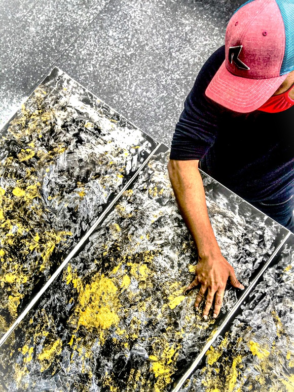

„Věřím v to, že si lidé odnesou myšlenku sdílené lidskosti. Uvědomění si, že jsme si více podobní, než nejsme. A že tyto vazby a vzájemný respekt a pochopení jeden druhého jsou nejdůležitějšími prvky, které můžeme využít k vytvoření mírumilovnějšího a empatičtějšího světa, nyní i v budoucnosti.“

Hesham Malik je výtvarník a vizuální etnograf zabývající se výzkumem současné figurativní abstrakce. Jeho akademická průprava zahrnuje studia na University of Waterloo v Kanadě a specializované programy zaměřené na umění a design na Parsons School of Design a v Museum of Modern Art (MoMA) v New Yorku.
S více než stoletím realizovaných samostatných exhibition projektů a institucionálními oceněními – včetně uznání od Art Tour International v New Yorku či ocenění za přínos k rozvoji mezinárodních kulturních iniciativ v Dubaji – Malik systematicky rozvíjí uměleckou praxi zaměřenou na pedagogické a participativní projekty.
Metodologicky Malik spoléhá na přímou terénní zkušenost a empirický výzkum. Odmítá ateliérovou izolaci a zaměřuje se na participativní pozorování a sběr narativů v odlišných kulturních a sociálních enklávách. Tento přístup utváří jeho charakteristický vizuální jazyk kombinující hmatové struktury, kaligrafickou zkratku a materiálovou vrstevnatost.
Jeho výzkumný záběr zahrnuje mapování sociální morfologie od komunitních struktur v evropských regionech po specifické sociální skupiny v metropolích, jako je New York či Manila. Etnografická analýza tak propojuje empirický terénní sběr s reflexí tradičních komunitních systémů, autochtonních kultur v Severní Americe, kmenových struktur v jižní Asii a Východní Africe i historických textů perské poezie.
„Umění není nástrojem segregace, ale nezávislou platformou pro setkávání odlišných světů. Ten, kdo se domnívá, že je správné a přípustné zachycovat jen vybrané vrstvy společnosti a jiné vytěsňovat, se dobrovolně z tohoto sdíleného prostoru vyčleňuje.“
Obhajoba sdíleného prostoru
V kontextu současné společenské fragmentace zastává Malik rigorózní postoj k otázce autonomie uměleckého výzkumu. Odmítá reduktivní kádrování umělecké tvorby a jakékoli snahy omezovat rozsah zkoumaných společenských vrstev.
Ve svých teoretických reflexích upozorňuje na destruktivní vliv politického populismu a selektivní empatie na kontinuitu kulturního dialogu. Úlohou výtvarné tvorby je podle něj sdílený prostor aktivně chránit, rozšiřovat a zpřístupňovat bez ohledu na ideologické či politické konjunktury.